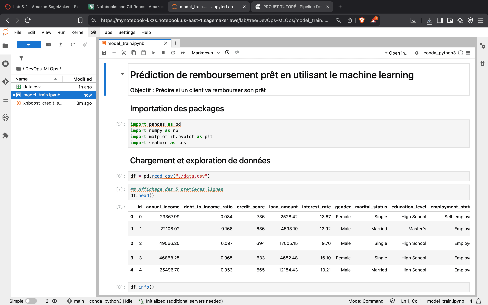
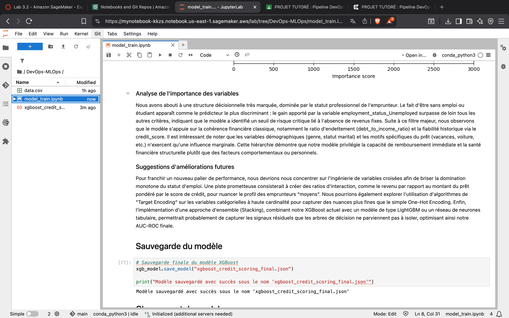
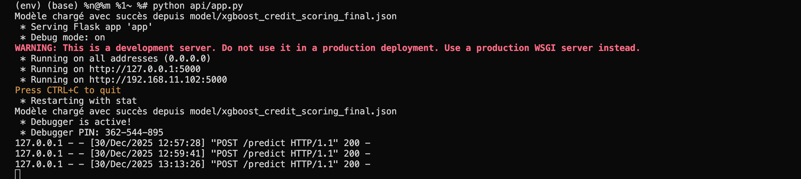
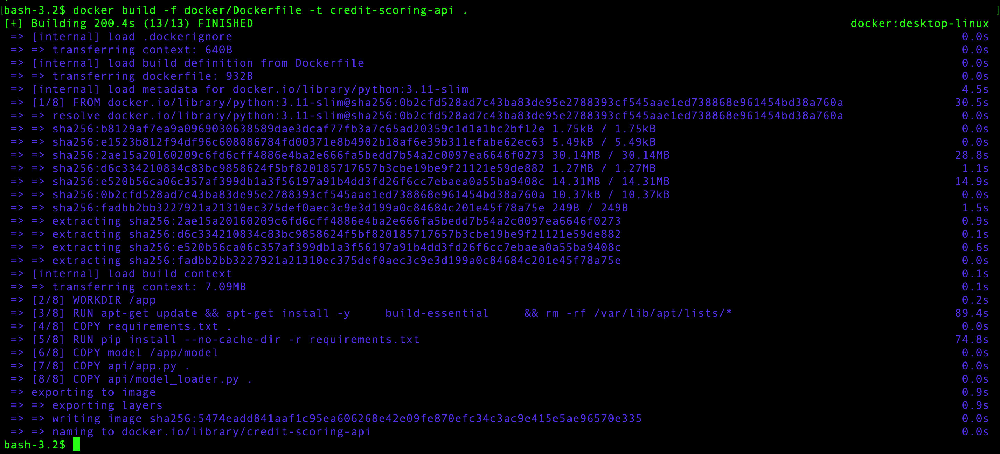
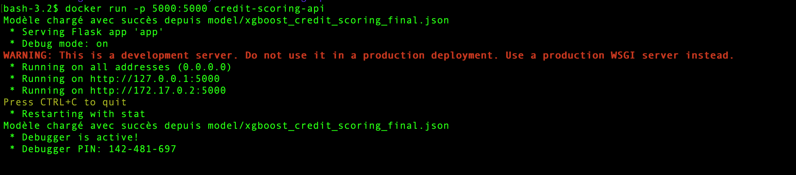
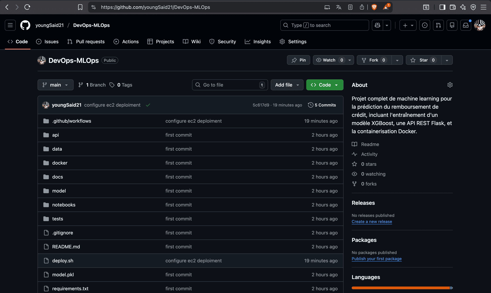
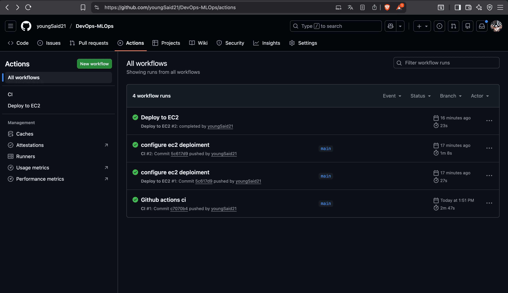
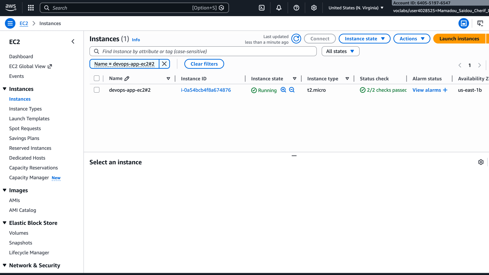
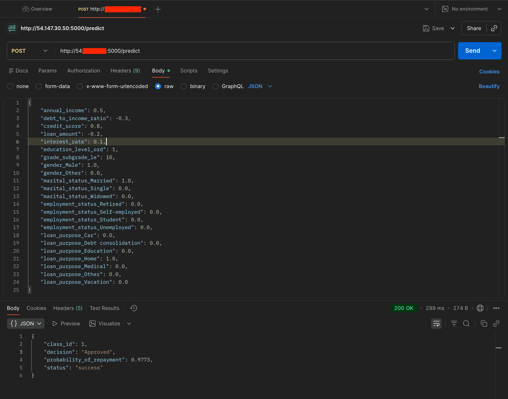

Project Highlights
Project Overview
The Credit Scoring Platform is an end-to-end Machine Learning project focused on predicting loan repayment probability while demonstrating the complete lifecycle of deploying a predictive model into production. Beyond model development, the project emphasizes software engineering and MLOps practices by combining model training, REST API development, containerization, continuous integration, and automated cloud deployment.
Built around an XGBoost classification model, the platform transforms raw credit data into production-ready predictions through a reproducible workflow. The trained model is exposed via a Flask REST API, packaged with Docker, automatically validated through GitHub Actions, and deployed to an AWS EC2 instance.
This project demonstrates how a machine learning model can evolve from a Jupyter Notebook experiment into a deployable application using modern DevOps and MLOps practices.
Key Technologies
XGBoost & Scikit-learn
Machine LearningFlask REST API
Model ServingDocker
ContainerizationGitHub Actions
CI/CD PipelineAWS EC2
Cloud DeploymentPandas & NumPy
Data ProcessingProblem Statement & Objectives
Financial institutions rely on credit scoring to estimate the likelihood that a borrower will repay a loan. Building an accurate predictive model is only part of the challenge—the model must also be accessible, reproducible, and easy to deploy in a production environment.
The goal of this project was to address this end-to-end problem by designing a complete workflow that transforms a trained machine learning model into a deployable REST API. Rather than focusing solely on predictive performance, the project emphasizes automation, reproducibility, and software engineering practices inspired by modern DevOps and MLOps workflows.
Core Objectives
Supervised ML Modeling
Develop a reliable credit scoring model using structured financial data and supervised machine learning.
Production REST API
Build a production-ready API capable of serving predictions through a simple REST interface.
CI/CD & Cloud Deployment
Automate the application lifecycle by integrating Docker, GitHub Actions, and AWS EC2 for continuous deployment.
DevOps & MLOps Standards
Apply DevOps and MLOps principles to create a reproducible workflow, from model training to cloud deployment.
System Architecture & Pipeline
The platform follows a modular architecture that separates model development, application serving, and deployment. Data is first processed and used to train an XGBoost classifier within a Jupyter Notebook. Once validated, the trained model is serialized and integrated into a Flask API responsible for serving predictions through dedicated REST endpoints.
The application is containerized with Docker to ensure a consistent runtime environment across development and production. GitHub Actions automates testing and deployment, while an AWS EC2 instance hosts the Docker container, making the API accessible through a public endpoint.
Loan Prediction Dataset 2025
Financial history, employment, loan features & applicant data from Kaggle.
Kaggle DatasetData Preprocessing
Ordinal / One-Hot Encoding & StandardScaler transformations.
23 FeaturesXGBoost Training
Supervised model training and test set validation.
ClassifierModel Serialization
Trained parameters serialized to reusable JSON format.
model.jsonFlask REST API
Microservice exposing prediction and health check endpoints.
/predict • /healthDocker Container
Self-contained runtime environment packaging code and assets.
Portable ImageGitHub Actions CI/CD
Automated unit tests, image builds, and SSH deploy trigger.
Automated PipelineAWS EC2 Hosting
Live deployment serving HTTP requests on public cloud endpoint.
Production APIDataset & Feature Engineering
The project uses the Loan Prediction Dataset 2025 from Kaggle, a binary classification dataset where the objective is to predict whether a loan applicant represents a good or bad credit risk. The dataset contains a mix of numerical and categorical features describing financial history, employment status, loan characteristics, and personal information.
To prepare the data for model training, a preprocessing pipeline was implemented to ensure consistency across all features. Categorical variables were transformed using Ordinal Encoding or One-Hot Encoding, depending on their nature, while numerical features were standardized with StandardScaler. This combination preserves meaningful categorical relationships and improves compatibility with the learning algorithm.
After preprocessing, the dataset was converted into a numerical feature matrix containing 23 input features, ready for model training. The preprocessing artifacts were saved alongside the trained model to ensure consistent transformations during inference.
Machine Learning Pipeline
The training workflow was designed to be simple, reproducible, and easy to deploy. After preprocessing, the dataset was split into training and testing subsets before training an XGBoost Classifier for binary credit risk prediction.
The trained model was then evaluated on the test set and serialized in JSON format, allowing it to be loaded directly by the Flask API without retraining. This separation between training and inference reflects a common production workflow where the model is trained once and reused for serving predictions.


API & Model Serving
To make the model accessible, a lightweight Flask REST API was developed. The API loads the serialized XGBoost model at startup and exposes two primary endpoints:
Incoming requests are preprocessed using the same transformations applied during training before being passed to the model. The API returns structured JSON responses and includes basic error handling to improve reliability.
This separation between model training and inference allows the prediction service to be deployed independently from the training environment.

Containerization with Docker
To ensure a consistent execution environment across development and production, the application was containerized using Docker. The Docker image packages the Flask API, the trained XGBoost model, and all required dependencies into a single portable environment.
Containerization simplifies deployment, eliminates environment-specific issues, and guarantees that the application behaves consistently regardless of the host machine.


CI/CD Pipeline with GitHub Actions
To automate software delivery, the project integrates GitHub Actions for Continuous Integration and Continuous Deployment.
The CI workflow is triggered on every push and pull request to the main branch. It installs project dependencies, executes the test suite, and validates the application before any deployment.
Once the CI pipeline succeeds, a deployment workflow connects to an AWS EC2 instance via SSH, updates the repository, rebuilds the Docker image, and restarts the container automatically. This process reduces manual intervention and ensures that the latest version of the application is consistently deployed.


AWS EC2 Cloud Deployment
The application is deployed on an AWS EC2 virtual machine, where the Docker container hosts the Flask API. A deployment script automates the update process by pulling the latest code, rebuilding the Docker image, and restarting the application.
This deployment strategy provides a lightweight production environment while demonstrating the complete lifecycle of a machine learning application, from local development to cloud deployment.

Results & Live API Validation
The project successfully delivers a complete Machine Learning deployment pipeline, demonstrating the transition from model training to a production-ready prediction service.
- Trained XGBoost credit scoring model: High predictive capability on structured tabular credit risk data.
- REST API microservice: Dedicated endpoints for live model inference (
/predict) and health monitoring (/health). - Dockerized application: Fully reproducible runtime environment packaging model artifacts & Flask server.
- Automated CI/CD: GitHub Actions workflow for automated testing and remote SSH cloud deployment.
- AWS EC2 deployment: Active public cloud deployment accessible for prediction requests.
The API was successfully validated by sending prediction requests and returning structured JSON responses, confirming that the entire workflow operates as expected.

Design Decisions & Architectural Trade-offs
Several technical decisions were made to balance simplicity, reproducibility, and deployment readiness:
XGBoost Classifier
Selected for top-tier accuracy on tabular financial data & fast inference.Flask Microservice
Lightweight REST serving framework avoiding unnecessary overhead.Docker Packaging
Guarantees identical behavior between local environment and AWS EC2.GitHub Actions
Automated CI testing & continuous deployment via remote SSH.Lessons Learned & Future Improvements
This project strengthened my understanding of how machine learning extends beyond model training. It provided hands-on experience in designing an end-to-end workflow that combines data preprocessing, model serving, containerization, automation, and cloud deployment.
It also highlighted the importance of reproducibility, modular project organization, and continuous integration when preparing machine learning applications for production environments.
Future Enhancements
- Replace the Flask development server with a production WSGI server such as Gunicorn.
- Introduce strict input schema validation using Pydantic for robust request handling.
- Add model versioning and experiment tracking with MLflow or DVC.
- Implement real-time model drift monitoring and logging (Evidently AI / Prometheus).
- Orchestrate container scaling using Kubernetes (EKS) or AWS ECS.
Complete Project Gallery
A visual walkthrough of the platform's key development, containerization, and deployment stages.